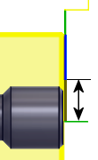

<div id="reducedPartingFeedRadius"><p>最終切削位置の前に送り速度が変化する半径を設定します。</p>
<p>切削終点前に送り速度を下げると、工具の負荷が軽減されます。</p>
<table class="tipTable" cellspacing="10">
<tr>
<td><center></center></td>
</tr><tr>
<td><center><p><b>送り速度変更半径位置</b></p></center></td>
</tr></table>
</div>